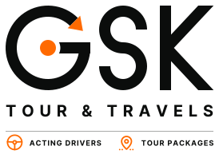

The idea: the G is a steering wheel — a ring, a spoke running into an orange hub — and the orange arrowhead at its open end is the direction of travel. S and K are drawn in the same heavy monoline, so the wordmark reads as one engineered piece rather than typed letters. It needs no photo, gradient or effect, which is why it embroiders, prints and stamps cleanly.
Primary lockups

Full · light backgrounds · letterhead, signage

Full reversed · green T-shirts, dark backgrounds
Horizontal · website header, email signature, vehicle door
Main Road, Chennai Tamil Nadu 600001 +91 98400 00000 hello@gsktravels.example
Tour Packages · Acting Drivers · Cab with Driver · Senior Care Rides · Corporate Pickups | Tamil Nadu · Kerala · Karnataka · Andhra Pradesh · Telangana
Colour
Ink #0B0D0C Nearest Pantone: Black 6 C
Signal Orange #FF6A00 Nearest Pantone: 1655 C — confirm on a press proof
Uniform Green #0F3D2E Match to the actual T-shirt fabric
Paper #F6F3EC Backgrounds, reversed type
Usage rules
Clear space Keep free space equal to twice the thickness of the G ring on all sides.
Minimum size Full lockup: 28 mm / 110 px wide. Horizontal: 24 mm / 90 px. Below that use the emblem or favicon.
On green & dark Always use the reversed (paper + orange) files. Never place the ink version on the green shirt.
Don’t Stretch, rotate, recolour the letters, add shadows or outlines, or place on busy photos without a dark overlay.